Rendered by SearchReviewShots (app render tests, dark theme, no device) and the desktop BrowseRenderTest.searchPalette. Phone portrait 411 x 891 dp, landscape 891 x 411 dp, TV 960 x 540 dp, font scale 1.3 where marked. The keyboard is not drawn.
What was seen and changed
Clear button: was the plain Close X (the same glyph as dismiss). Now one shared ClearButton: a cross in a soft round disc (28 dp disc, 48 dp target), on the phone page, the chat grid, the desktop chat search and palette, and the web page. On the TV the disc fills with the focus colour and takes the focus ring.
Close button: the separate round X next to the field is gone. Back clears the words first, then closes. The field now takes the full width.
Count line ("4 videos in 3 chats") touched the first card when no "Search my other chats" button sat beside it: it now keeps a 40 dp row.
"Every chat was searched" note at font scale 1.3: the words were squeezed to five lines beside the button. Above a 1.15 font scale the button now drops under the words.
TV clear focus: the ring alone (dark ink) was close to invisible on the dark page; the disc now fills with the focus colour.
Looked at and left: pill height and alignment, hint text, glass colour (accent while the field has focus), the clear and mic swap, filter chips (scroll sideways, the last one is cut on purpose), results spacing, no-results page, error row with Retry.
Not changed, not verifiable here: the keyboard covering results in landscape (the page uses imePadding, but a phone's landscape keyboard leaves very little list), and the in-chat "newest N messages" note (a chat's search, not this page).
Phone portrait
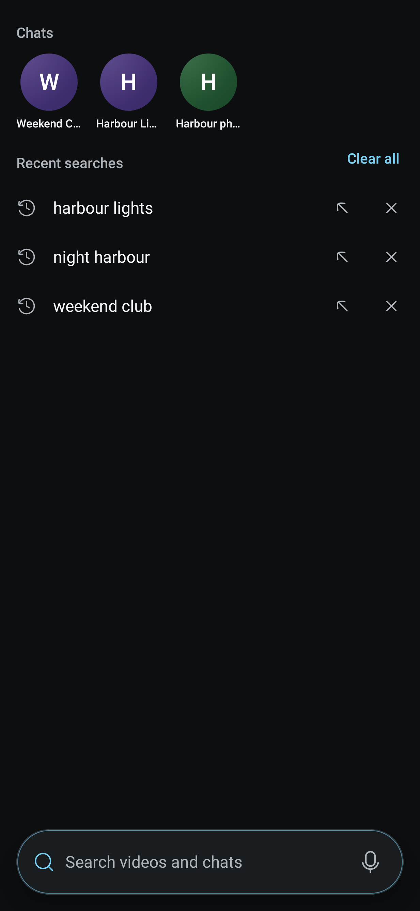
Empty: recent chats and searches, the microphone at the field's end.
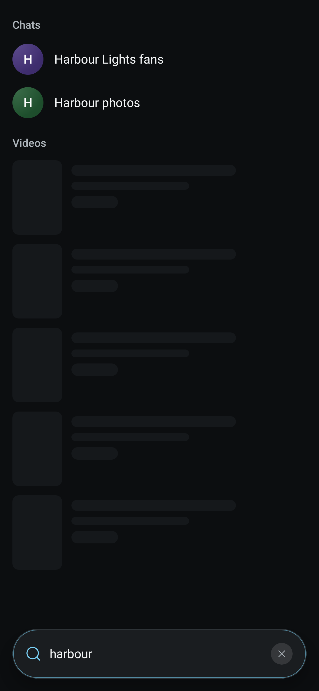
Typing, the answer still settling: the new clear disc, local chat matches.
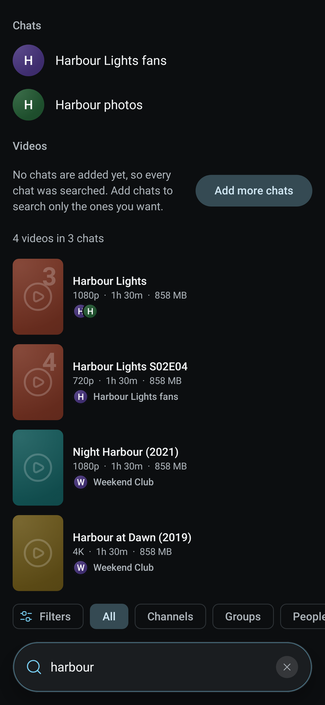
Results with the count line, filter chips and the note.
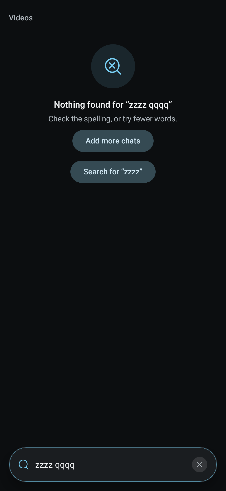
No results: the picture, the two ways on.Searching: skeleton rows under the chats.
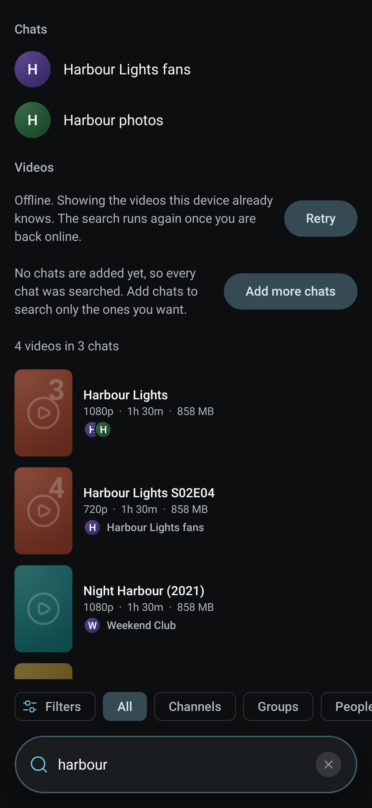
Offline: what the device knows, with Retry.
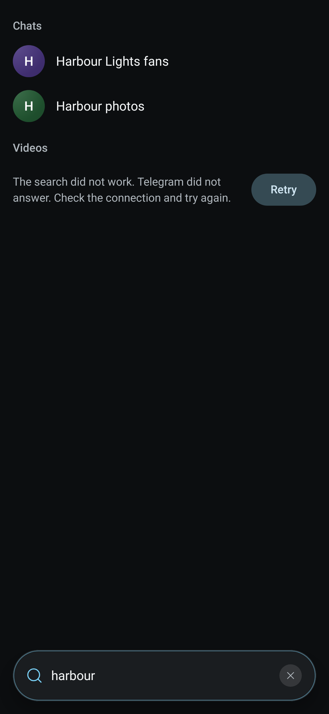
Error with Retry.
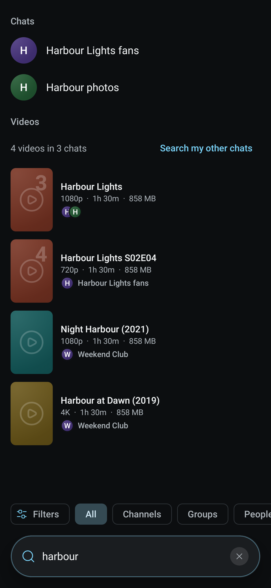
Search my other chats, beside the count line.
Phone at font scale 1.3
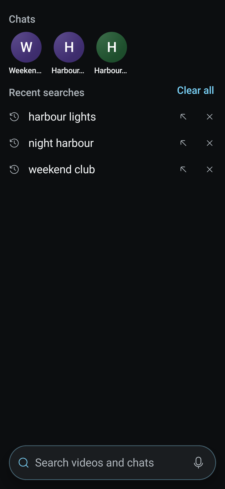
Empty.
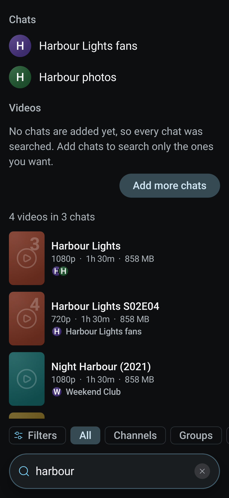
Results: the note's button under its words.
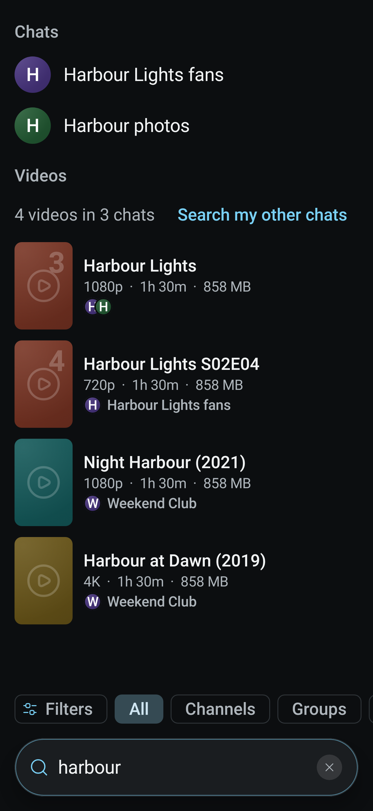
Other chats: the line and the link fit.
Phone landscape
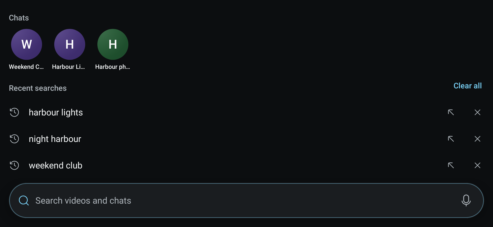
Empty.
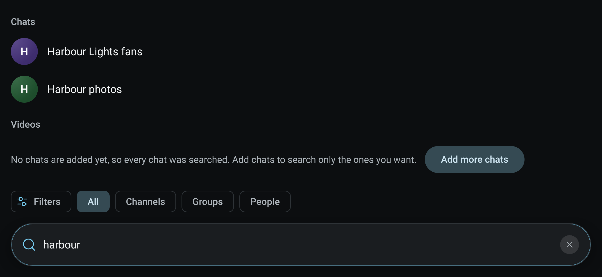
Results: the list is short here, with the keyboard up it would be shorter.
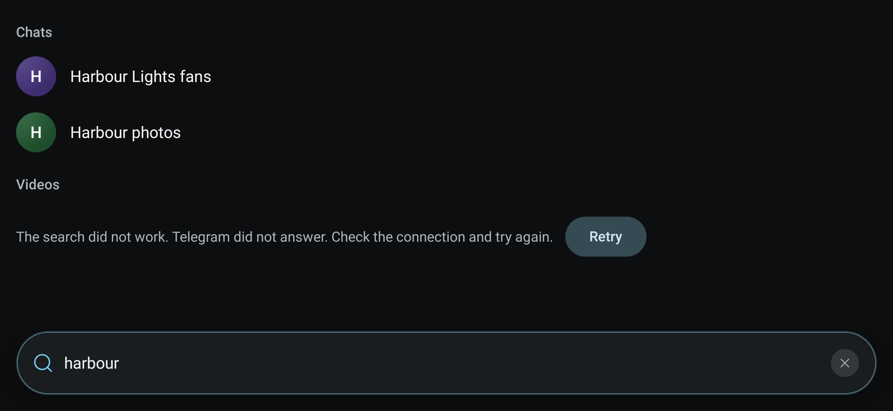
Error.
Television
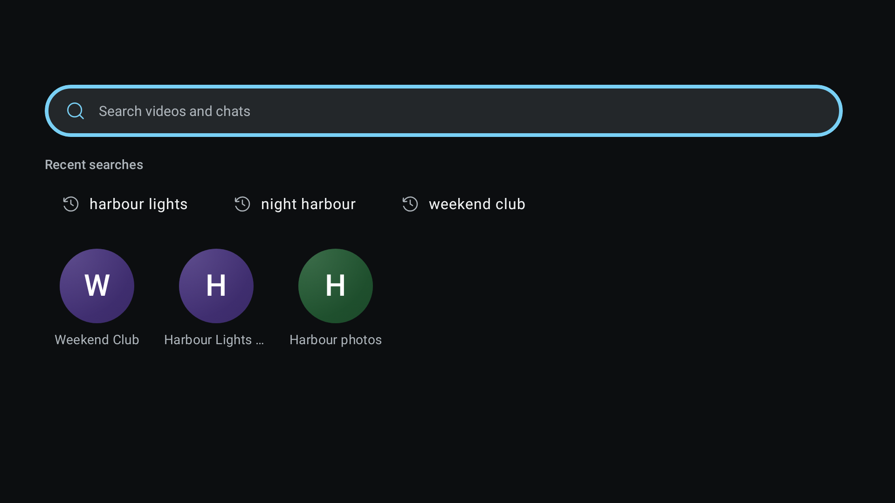
Empty: the recent searches under the field.
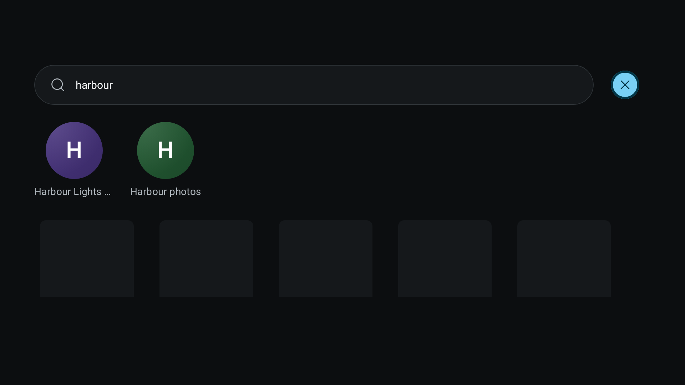
Right from the field reaches the clear control: filled and ringed.
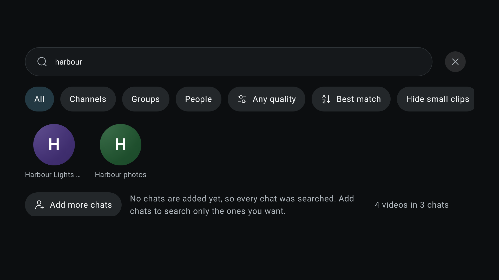
Results header: filters, chats, the note and the count.
Desktop palette
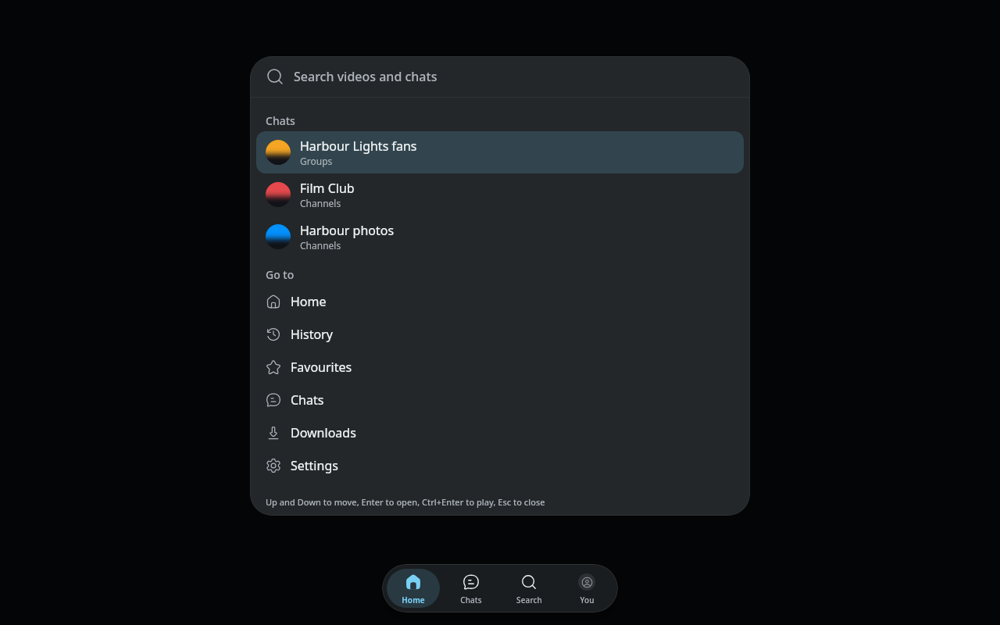
Empty.
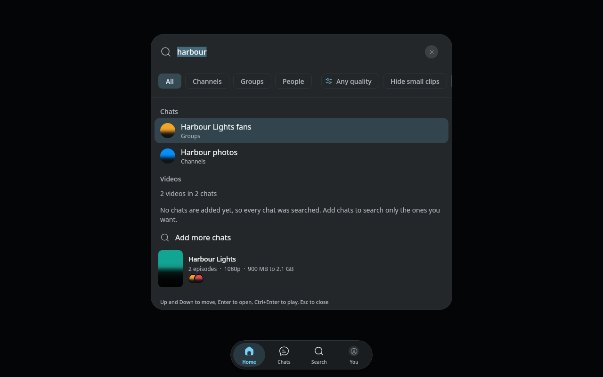
Results, dark: the clear disc at the field's end. No close button: Esc clears, then closes; a click outside closes.